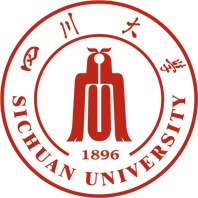

Nanjing University
School of Artificial Intelligence
M.Sc. student Incoming
LAMDA · Advisor: Dr. Da-Wei Zhou
Starting in
Jiahui Peng · 彭嘉辉
School of Artificial Intelligence
M.Sc. student Incoming
LAMDA · Advisor: Dr. Da-Wei Zhou
Starting in

School of Software Engineering
B.Sc. in Software Engineering
Also a student in the Honors Bachelor's Program (Shuren Class), Wu Yuzhang Honors College.
GPA: 3.92/4.00 Rank: Top 2%
— Present
Recommended for Graduate Admission without Entrance Examination
National Scholarship, Ministry of Education